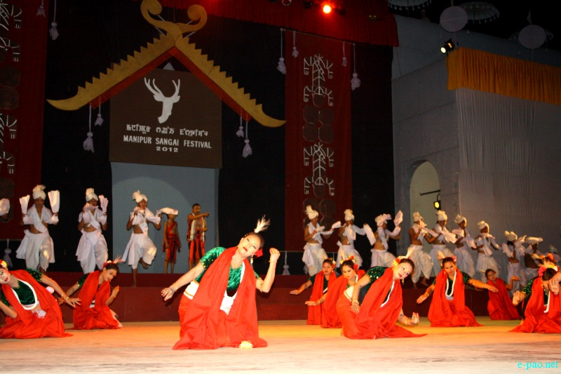
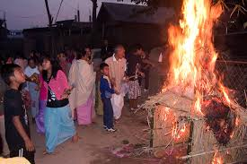
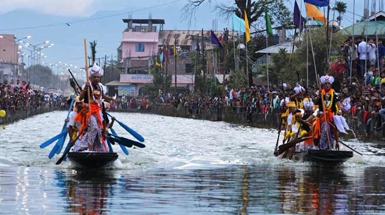
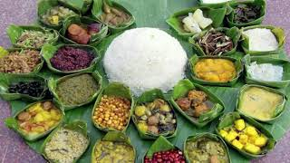

Sangai Festival
Sangai festival is an annual cultural festival organised by Manipur Tourism Department every year from 21 to 30 November.[1] Even though many editions of this Festival has been celebrated over the past few years with the name of Tourism Festival, since 2010 this has been renamed as the Sangai Festival to stage the uniqueness of the shy and gentle brow-antlered deer popularly known as the Sangai, a regional name given to this rare species of deer. It is the state animal of Manipur. As this festival is being celebrated to promote Manipur as a world class tourism destination, it showcases the states contributions to art and culture, handloom, handicrafts, fine arts, indigenous sports, cuisine, music and adventure sports, as well as the natural environment.[2] it is celebrated in different parts mainly in the valley areas of imphal. Many tourists come from all over the world and represent their craft making. Many people have also started to talk about the way Sangai festival is celebrated.

Shirui Lily Festival
The Shirui Lily Festival honours Manipur’s State Flower and is part of Manipur Tourism’s efforts to promote and execute sustainable and ethical tourism in the state, as well as to save and raise awareness about the endangered Shirui Lily located only in the Shirui Hills. The Shirui Lily can only be found in the Shirui hills in Manipur and cannot be replanted anywhere else on the planet. During the flowering season, the state flower of Manipur infuses the air with a delightful smell.
The Shirui Lily blooms from late May to early June only on Shirui village hilltop.
The Shirui Hills is considered one of the most interesting treks in Manipur. Ukhrul, around 83km east of the state capital Imphal, is the state’s highest hill station. It is connected to Imphal via NH-150.

Yaoshang
Observed for the continuous five days, the festival of Yaoshang is celebrated with full exuberant and is counted amongst the top festivals of Manipur. Whether young or old, everyone takes part in the festival and solemnized it with their traditional songs and dance performances. However, the main attraction of the beautiful of Yaoshang is the traditional Thabal Chongba dance. The word ‘Thabal Chongba’ stands for ‘Moonlight Dance’, and hence, it is performed during the night. Various folk songs are also sung by the locals to which the beats of Dholkar (a drum) give the perfect compliment. On the first day of Yaoshang, for the festival, children collect the money from the neighbouring houses.
Colours are one of the significant aspects of this beautiful festival; locals apply colors on the faces each other and children can be seen splashing water to the people with water guns (pichkari). However, unlike Holi, the festival runs for a continuous five days. In the state, the festival of Holi means burning, and therefore, in order to pay their reverence, there is a ritual of building a hut and set it on fire. Along with that, during the course of this festival, a number of sports activities like races, soccer and tug of war are also organized in Manipur. However, the inauguration of this sports meet is organized at Kangla Fort in Imphal. Not just this, the celebration of this amazing Manipuri festival also includes local delicacies that are shared with the people. On a whole, Yaoshang is one of the most ebullient festivals in Manipur that are celebrated by everyone, irrespective of their community, age and gender.

Gan Ngai
Gang Ngai Festival is one of the important festival which is celebrated with much love and ardour. The festival of Gang-Ngai is a synonym of dance, fest, music and spiritual rituals. The term Gang Ngai stands for the festival of winter and is also touted as Chakan Gaan-Ngai. Celebrated for a straight five days, this exuberant festival in Manipur is observed in various parts of the state. Basically, these five days of the festival remain full of fun and cultural extravaganza. On the first day, the locals performed various sacred rituals to pay reverence to their ancestors.
The rituals include sacred fire, homage and prayers to the deities for the good health of the community. The graves of the ancestors are also embellished with flowers. Followed by this, the next four days observed the continuous festivities with dance, music and community feast. During this time, the men and women of Kabui Nagas community, wearing their traditional attire, dancing on the streets on the melodious tunes of traditional musical instruments played by the men. Not just this, gifts are also exchanged amongst the family and friends. However, recently, various sports activities like long jump and shot put, have also been included in the celebration of the festival. On a whole, the festival of Gang Ngai signifies the spirit of communal unity, peace, love, and prosperity.

Heikru Hidongba
Heikru Hidongba festival is the annual festival of the Meitei community of Manipur and is also considered as the religious boat race festival. This festival takes place on the 11th day of the month of Langban of the Meitei lunar month, i.e. on the month of September. It is celebrated in order to pray for the peace and prosperity to the communities of Manipur. Heikru Hidongba is also a festival which marks the maturing of the seasonal fruit i.e. Heikru and this festival is only celebrated only at the moat of Bijoy Govinda.

Cheiraoba
Cheiraoba Festival is the celebration of the New Year festival in Manipur. This is a sacred festival of Manipur when all the people welcome the new year grandly. The locals clean their houses and decorate them. The local deity is worshipped, and relatives visit one another’s place. Exchange of gifts and ideas takes place. Hindus only celebrate this festival, but Muslims of Manipur too take part and make the occasion a grand one. On that day, the locals climb the nearest hilltops, which signifies the rise of human civilization to greater heights.
Cheiraoba Festival takes place in April. The New Year is received with great ideas and traditional customs. The society of Manipur is not at all open, but tourists visit the state to experience the unique tradition that exists in the community and customs.
Cheiraoba festival in Manipur is when you can experience the essence of culture and tradition while admiring the vibrant atmosphere. You can enjoy this festival and be a part of it by visiting this place during the celebration. Contact our tour experts to know more about this festival and book your tour through our Manipur tour packages.

Ningol Chakouba
The Ningol Chakouba Festival is an outstanding social festival of the Meiteis. The married women of the family, who were married off to distant places, come to their parental house and their children and are served a lavish and extensive meal to enjoy. This festival is a form of a family get-together to revive the family affection. In the present times, this festival is observed by the Pangals or the Manipuri Muslims to some extent.
The Ningol Chakouba Festival is celebrated on the second day of the New Moon in the Manipuri month of Hiyangei, which is November.